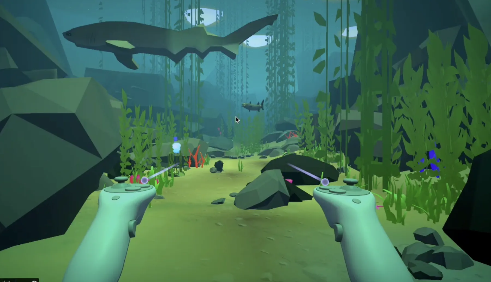
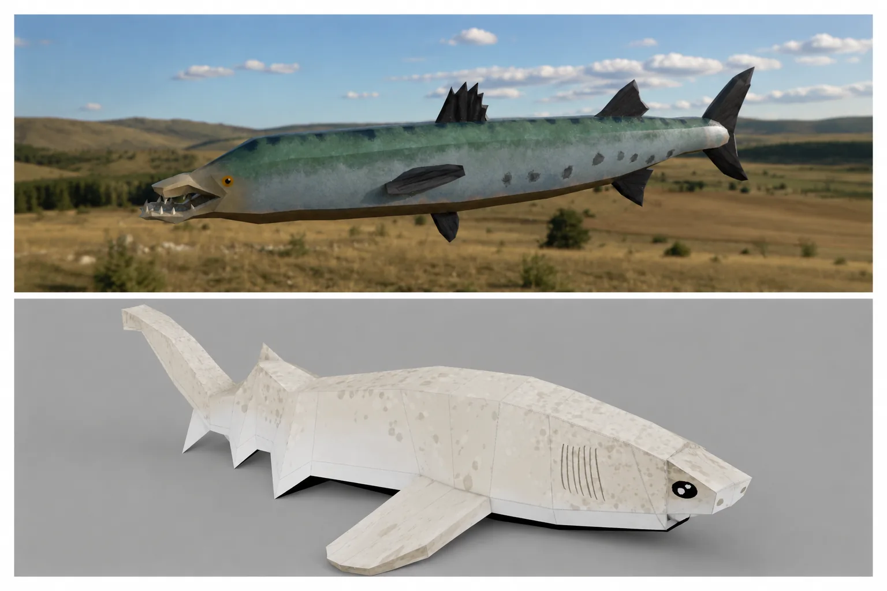
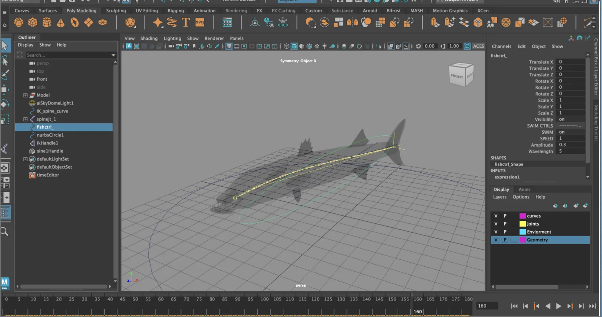
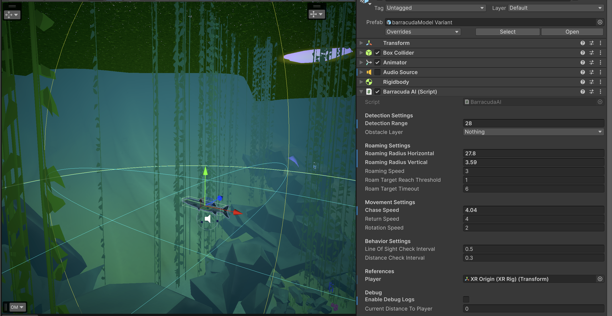
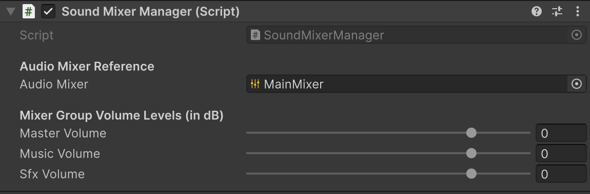

Technical Art projects
TECHNICAL ART · UNITY AI · VR DEVELOPMENT
VR Ocean Site One
Bringing a shark and barracuda from Maya into a responsive VR ecosystem.
My contribution centered on the complete predator pipeline: modeling, texturing, rigging, weight painting, animation, Unity integration, AI-driven behavior, and reusable audio systems for an educational biodiversity experience.
- Unity
- C#
- XR Toolkit
- Maya
- IK
- Deformers
- Animator
- Audio Mixer

01 / PROJECT OVERVIEW
A small project with one clear technical-art challenge: make the predators feel alive.
VR Ocean Site One is an immersive biodiversity experience set around an offshore Santa Barbara site. I worked inside an existing Unity project to create two critical predator assets for an egg-collecting mini-game and connect their visual motion to gameplay behavior.
Asset creation
Modeled and textured the shark and barracuda with readable silhouettes suited to an underwater VR scene.
Character animation
Built rigs, painted weights, and used IK systems and deformers to create convincing swimming motion.
Real-time behavior
Integrated the assets with Animator state machines, animation events, and C# behavior scripts for responsive predator AI.
Audio and handoff
Built reusable audio managers and a mixer, then documented the Maya-to-Unity workflow for future contributors.
02 / MAYA → UNITY
The asset was not finished until it moved correctly in-engine.
I treated modeling, deformation, animation, export, and Unity setup as one connected production problem rather than separate deliverables.
MODEL + TEXTURE
Build readable marine silhouettes.
Created the shark and barracuda assets with forms that remained recognizable at VR viewing distance and during fast movement.
RIG + WEIGHT PAINT
Prepare flexible bodies for swimming motion.
Constructed joint systems, painted deformation weights, and used IK and deformers to support smooth body bends and tail motion.
ANIMATE
Create cycles that could support gameplay states.
Authored predator animation that could be reused and transitioned through Unity rather than remaining a single presentation clip.
EXPORT + INTEGRATE
Preserve the work through the engine handoff.
Exported the assets, configured Unity import settings, connected clips to Animator controllers, and documented the process.


03 / UNITY SYSTEMS
Animation, behavior, and sound worked as one response system.
The goal was not just to display animated fish. The predators needed state-driven movement, clear reactions, and audio feedback tied to gameplay and environmental events.
PREDATOR AI
From behavior state to visible motion.
- Unity Animator controllers and state machines
- Animation events for timing-dependent behavior
- C# scripts connecting AI decisions to animation states
- Responsive predator interactions inside the VR mini-game
{kind=link}

INTERACTIVE AUDIO
A reusable mixer instead of one-off sound calls.
- Audio managers for music and sound effects
- Unity Audio Mixer routing and level control
- Audio connected to gameplay and environmental events
- A cleaner structure future teams could extend
{kind=link}

PRODUCTION NOTE
I also debugged the Meta Quest 3 build, presented sprint deliverables during client reviews, incorporated playtest feedback, and wrote Maya-to-Unity pipeline documentation so the asset work could be repeated rather than rediscovered.
04 / TECHNICAL DOCUMENTATION
Maya Asset → Rig → Animation → Unity Behavior
I documented the reusable character pipeline so the handoff explains not only what to click, but why the base model and animation clips should remain separate, why animation must be baked to joints, and how the final FBX set is validated in Unity.
Keep a stable root and clean export hierarchy.
Convert controller and IK motion into joint keys Unity can read.
Use one base-model FBX and separate lightweight clip FBXs.
Configure import settings, materials, clips, and Animator states.
The seven-page guide covers workflow selection, bake/export evidence, Unity integration, reusable clip naming, and a final validation checklist. It is presented here as production-process documentation rather than as a separate external link.
05 / PROJECT REEL
Show the craft, then show it working.
A useful breakdown reel can move from Maya wireframe and rig controls to animation clips, Animator states, predator behavior, and final headset gameplay.
06 / RESULT
A compact project that exercised the full asset loop.
OSO strengthened my ability to move between artistic decisions and real-time implementation. The most important lesson was that a character asset is only complete when its deformation, animation, behavior, audio feedback, and engine handoff all survive contact with the playable experience.